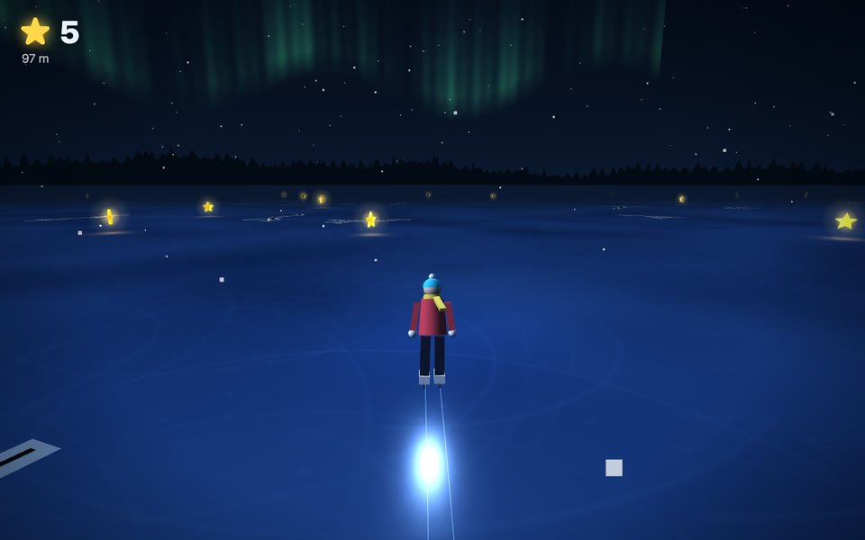

Fable 5.2 vs Opus 5.5: the same 3D skating game, 3 tries each
One ask for a night ice-skating game in three.js, untouched. All six run. Two blind AI judges split 21–21 on which model's games were better, and Fable costs twice as much per token. Play them and pick your own.
The prompt
Make me a playable 3D game as a single index.html, using three.js from <script src="../../_lib/three-r128.min.js"></script> (global THREE) and no other libraries or external files: I'm ice-skating on a frozen lake at night, steer with the arrow keys or A/D, collect the glowing stars, avoid the cracks in the ice, show the score, and restart on space after I fall through. Also add a demo mode: when the URL has #t=<seconds>, a simple autopilot plays and the page draws exactly that moment of the demo (seeded random, no clock), so I can record it frame by frame.